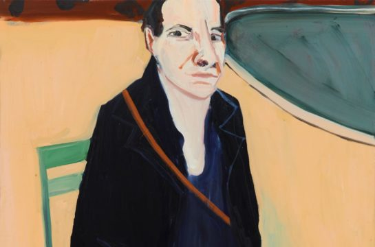

Art in the City
TALKS | ART IN THE CITY – SEAN EDWARDS
Art in the City
TALKS | ART IN THE CITY – SEAN EDWARDS
Wednesday, 4th November 2020, 18:30 to 20:00 | This is an online presentation on Zoom. | £5.45 (including booking fee)
Art in the City is a series of international artist’s talks co-presented by Fine Art UWE Bristol and Arnolfini. This in-conversation is with Sean Edwards, Programme Director for Fine Art at Cardiff School of Art and Design.
 Sophia Harari | Two Worlds Collide
Sophia Harari | Two Worlds Collide
Thursday, 1st October 2020 to Saturday, 31st October 2020, 12:00 to 17:00
Sophia Harari is a writer, poet and musician creating content surrounding identity and self-expression. Two Worlds Collide is an exploration of her identity, considering the intersects of her Moroccan-ness and Blackness and questioned how they inform one another.

Workshop
Adult Creative Writing Workshop with Lizzie Lloyd
Saturday, 7th November 2020, 14:00 to 16:00 | Limited spaces available. Face coverings to be worn unless exempt. | £5. Sold Out.
Using Chantal Joffe: For Esme – with Love and Squalor exhibition as a jumping off point to explore creative writing on art.
 Family
Parent and Teen Creative Writing and Drawing Workshop with Lizzie Lloyd
Family
Parent and Teen Creative Writing and Drawing Workshop with Lizzie Lloyd
Saturday, 21st November 2020, 14:00 to 16:00 | Limited spaces available. Age 13+. Face coverings to be worn unless exempt. | £5 per person. Sold Out.
In this workshop we’ll be bringing together teens and their carers for a session of quick-fire writing and drawing.
 Family
We Are Family | Life Drawing (on Zoom)
Family
We Are Family | Life Drawing (on Zoom)
Saturday, 31st October 2020, 13:30 to 15:00 | Age 5+ | Free for everyone.